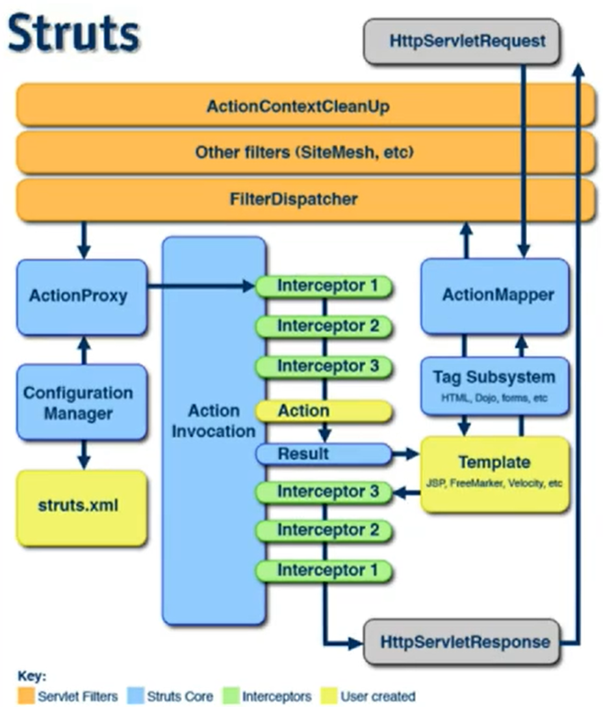

框架概述
框架就是把一些繁琐的重复性代码封装起来，是程序员再编码中把更多的精力放到业务需求的分析和理解上面。框架封装了很多细节，在使用的时候会非常简单。
SSH
struts spring hibernate
SSM
spingmvc spring mybatis
Struts2的环境搭建
Apache发行的MVC框架，是一个表现层框架。
开始
新建项目
将struts2-blank.war中使用到的包都导入。这是官方给的模板。
将struts2-blank.war中class目录下的struts,xml配置文件拷贝到src目录下。
配置struts过滤器。
过滤器的作用是拦截请求，代替servlet，使用Struts的规则去处理请求。
在web.xml中配置Filter
1
2
3
4
5
6
7
8
9<!-- 配置struts过滤器 拦截所有请求 -->
<filter>
<filter-name>struts2</filter-name>
<filter-class>org.apache.struts2.dispatcher.ng.filter.StrutsPrepareAndExecuteFilter</filter-class>
</filter>
<filter-mapping>
<filter-name>struts2</filter-name>
<url-pattern>/*</url-pattern>
</filter-mapping>
Action的配置
在
<struts>中配置package和action、1
2
3
4
5
6
7
8
9
10
11
12
13
14
15
16
17
18
19<struts>
<!--
package:包名，不能有相同的包名，是唯一的
extend:继承，struts-default
action:相当于servlet的映射路径(@WebServlet)
-->
<package name="p1" extends="struts-default">
<!--
name:请求路径名称，没有后缀，和页面上是否写了.action后缀无关
class:处理请求的action类
method:对应执行的方法
result:结果，返回的jsp页面
-->
<action name="hello" class="cn.Retur0.action.HelloAction" method="sayHello">
<!-- 成功jsp页面是从WebContent目录下找的 -->
<result name="success">/success.jsp</result>
</action>
</package>
</struts>写HelloAction类和sayHello方法
1
2
3
4
5
6
7
8package cn.Retur0.action;
public class HelloAction {
public String sayHello() {
System.out.println("sayHello");
return "success";
}
}在WebContent中添加success.jsp页面
1
2
3<body>
HelloAction的sayHello方法返回的页面
</body>
整个流程为：
- 访问
/项目名/action名， - 这个action在struts.xml中找到对应的方法去访问，
- 方法返回一个字符串，
- 根据这个字符串在struts.xml中找到对应要访问的jsp页面。
Struts执行流程

其中黄色部分是我们需要编写的。
Struts配置文件的加载顺序
当应用被tomcat加载的时候，struts2的配置文件就已经被加载过了。
加载顺序：
- default.properties
- struts-default.xml
- struts-plugin.xml
- struts.xml 可修改
- struts.properties 可修改
- web.xml 可修改
加载顺序的意义在于：对于某些属性的配置，后加载文件中的赋值会覆盖先加载的文件中的值。
举例：修改action访问后缀。
在default.properties中，struts.action.extension这个属性的值决定了在访问action时哪些后缀可以使用户端访问到。它默认为
action,,
意思是后缀为.action或者没有后缀都可以访问
我们可以在struts.xml 中配置一个常量来达到覆盖default.properties中值的效果：
1 | <struts> |
此时，我们使用.action或者没有后缀访问action就访问不到了，只有使用.php后缀才可以访问到。
也可以在src目录下创建一个struts.properties文件，添加：
1 | struts.action.extension=htm |
此时只能通过.htm后缀访问action。struts.properties在struts.xml后加载，struts.action.extension属性被覆盖了。
还可以在web.xml中的filter标签中添加init-param标签：
1 | <filter> |
此时可以访问到的后缀为.do。
Struts的开发模式
可以在struts.xml 中配置一个常量来开启开发模式：
1 | <constant name="struts.devMode" value="true"></constant> |
配置开发模式后，错误信息更详细，更改配置文件后不需要重启服务器。
Struts的主要配置元素
在<struts>标签里可以写的那些标签
<package>
在struts2的配置文件中引入了面对对象的思想，使用了分包管理。易于管理动作类。便于模块化开发动作类。
其中的一些属性：
name：包的名称，非空且唯一。
extends：
- 一般情况下继承struts-default包，但不是必须的。
- 不继承的话无法使用struts2的核心功能。
- struts-default这个包定义在struts-default.xml中。struts-default.xml在struts.xml加载之前加载。
abstract：把包声明为抽象包，抽象包就是用来被继承的。只要是没有
<action>元素的包，都可以声明为抽象包。namespace：命名空间。访问路径=”/命名空间/action名”。
默认值是空字符串。
可用于模块的划分.
namespace="/ns"查找规则：假设输入路径为”/a/b/c/hello.action”。
先找有没有/a/b/c命名空间，再找有没有/a/b命名空间，最后找有没有/a命名空间，上面三次查找有一次找到了就在其中找hello.action并执行。
<action>
配置动作，处理请求路径。
其中的一些属性：
name：动作名称。
class：动作全类名。相当于一个Servlet类。
method：动作类中的方法名称。默认是public String execute(){}
方法的要求：是public，返回类型是String，没有参数。（返回值可以写void，代表没有处理后的跳转页面）
动作类的三种写法
- 直接写action的java类并在struts.xml中配置。
- 写action类并实现Action接口，然后在类中实现execute()方法。如果在struts.xml中没有指定method，则默认使用execute方法。
- 写action类并继承ActionSuport类，ActioSuport是Action接口的实现类。
如果在struts.xml中添加action却不写对应的action类，则会默认调用ActionSuport类中的execute()方法。在struts-default.xml中的<default-class-ref class=""/>标签实现了这一点。
如果想修改默认动作类，可以在package标签中配置<default-class-ref class=""/>。
一个package中可以配置多个action。
通配符
1 | <package name="p1" extends="struts-default" namespace="/user"> |
若在WebContent目录下有一个Student文件夹，其中有add.jsp。在UserAction方法中有一个返回值是”success”的add()方法。那么在访问/项目名/add_student时，就会访问到add.jsp。因为第一个*的内容可以由{1}指代，第二个*的内容可以有{2}指代，所以实际上method="add"，result标签中的路径是/student/add.jsp。
动态调用
访问时：/action名!方法名
在struts.xml中添加常量标签来启用动态调用：
1 | <constant name="struts.enable.DynamicMethodInvocation" value="true"></constant> |
<result>
为动作指定结果视图。
属性：
name：逻辑视图的名称，对应着动作方法的返回值。默认值是success。
type：结果类型，指的是用什么类型转到定义的页面。默认是dispatcher。
dispatcher：默认值，使用请求转发，转向一个页面。
redirect：使用重定向，转向一个页面。
chain：转发到另一个相同命名空间的动作，也可以转发到不同命名空间的动作。
redirectAction：重定向到另一个相同命名空间的动作，也可以重定向到不同命名空间的动作。
type属性的取值在struts-defalut.xml中定义着。
转发或重定向到不同包的action的result写法：
1
2
3
4<result name="success" type="chain">
<param name="namespace">/ns</param>
<param name="actionName">/an</param>
</result>这种写法叫依赖注入，它会把参数传入到被使用的类中。
自定义结果类型
result的type除了上面的4中，还可以自己定义结果类型。
写自定义结果类型，需要写一个实现result接口的类。com.opensymphony.xwork2.Result
实现result类要有一个doExecute方法，用于执行结果视图。
setp：
写一个类继承StrutsResultSupport或者实现Result接口。
重写doExecute方法。
1
2
3
4
5
6
7
8
9
10
11
12
13
14
15
16public class CAPTCHAResult extends StrutsResultSupport{
private int width;
private int height;
//public get set wedth height;
protected void doExecute(String finalLocation,ActionInvoaction invocation)throws Exception{
//创建验证码
ValidateCode vc = new ValidateCode(width,height,4,8);
//获取响应头
HttpServletResponce resp = ServletActionContext.getRequest();
//相应给客户端页面
vc.write(resp.getOutputStream());
}
}配置struts.xml
1
2
3
4
5
6
7
8
9
10
11
12
13<package name="p1" extends="struts-default" namespace="/n1">
<!-- 声明自定义结果类型 -->
<result-types>
<result-type name="captcha" class="cn.Retur0.web.result.CAPTCHAResult"></result-type>
</result-types>
<action name="captchaAction">
<!-- 此时result标签不需要写跳转路径，因为此动作并没有跳转 -->
<result name="success" type="captcha">
<param name="width">120</param>
<param name="height">30</param>
</result>
</action>
</package>最后，访问/n1/captchaAction即可得到一个验证码。
在result标签中可以使用param标签添加一些参数，param标签的name属性是参数的名字，标签包裹的是参数的值，这样struts自动把参数传入到action类中。
全局视图和局部视图
上面的那种自定义返回类型配置就是局部视图，只能在p1下才能使用captcha这个返回类型。如果想在不同包下使用返回类型captcha，则声明一个可以被继承的抽象包，在这个抽象包中声明返回结果类型。
1 | <package name="myDefault" extends="struts-default" abstract="true"> |
这样就可以在不同包使用captcha返回类型了
动作类中的servlet api访问
在action中获取request，response，session，application对象。
获取servlet的api方式：
通过ServletActionContext获取。
通过注入方式，先让Action实现ServletRequestAware和ServletResponseAware两个接口。（Aware：注入）
注入原理：struts中有个ServletConfigIntercepto拦截器，自动对action进行一些赋值。